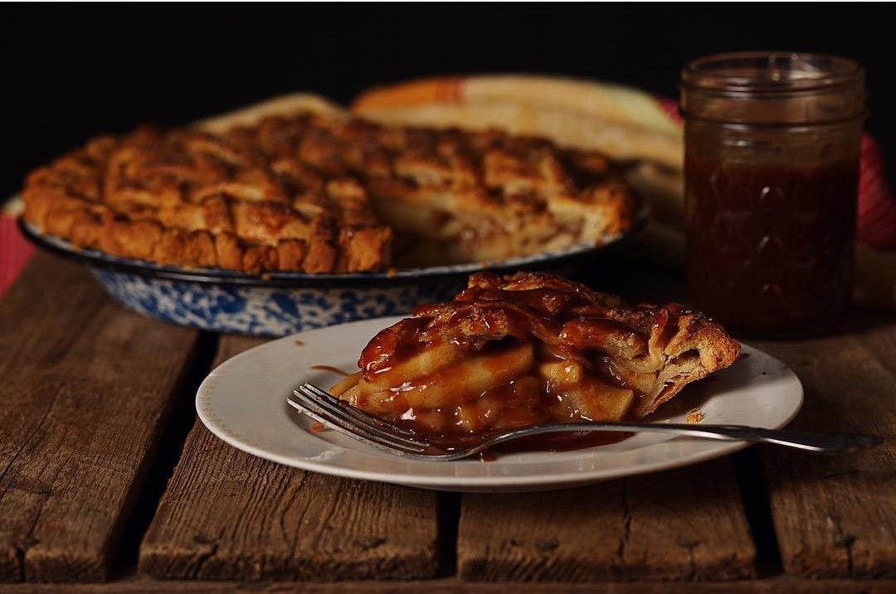
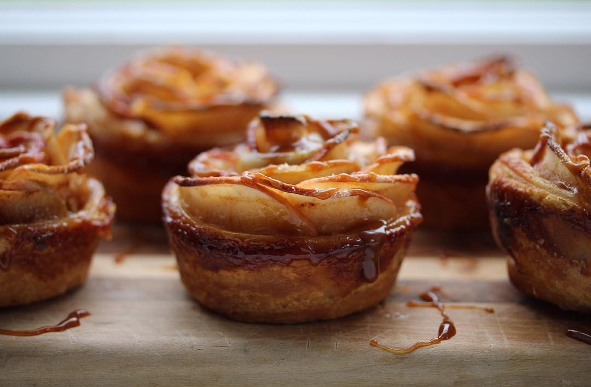
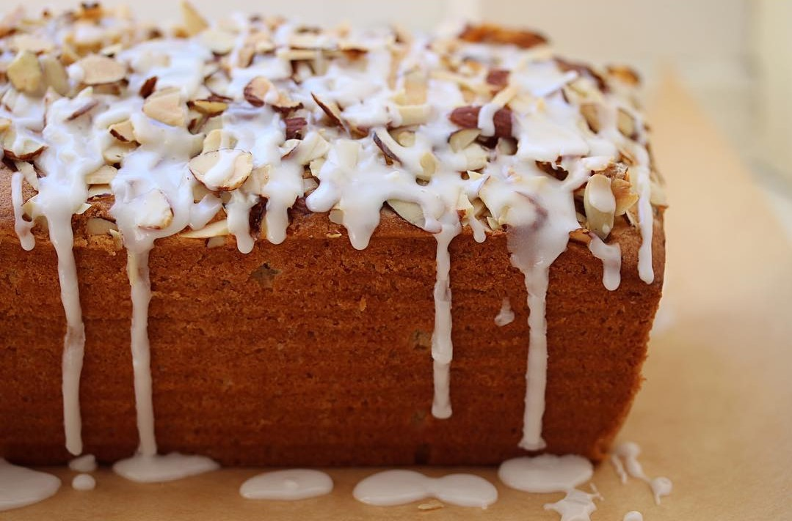

Hilary Myers Bakes

Welcome
I grew up in a family of tremendous home bakers, but I’ll tell you what- there’s nothing you could tell 8 year old Joy to
sway her from the indisputable fact that the best pies came dangerously hot, in a precisely folded paper
container, filled with apple flavoring in a delightfully crisp crust from McDonald’s. The golden arches,
where the cheeseburgers taste like candy in the most perplexing way. The pies, though! The pies were delicious
and if I was lucky enough to have one, it meant that I likely also had french fries in my life so… clearly
it was the best of days.

I’ll tell you what’s so great about McDonad’s pies. They’re filled with… not exactly apples. They’re filled with what might
be considered a spiced apple goop and a few strategic apple (?) pieces. Essentially the pies are just hot
apple jelly inside of a pie crust and they were SO GOOD (albeit so hot you were taking your life in your
hands with your first bite).

I mention these apple pies because we can do better- and all it takes is good jam and pie crust. This is a recipe from earlier
this year that I thought was worth revisiting for summer because we all need a quick dessert that’s as good
as our childhood fast food dreams.

We’ve talked a lot about pie crust. Incessantly, really. This recipe starts with a big batch of all-butter pie crust. The
same recipe that makes a full pie, top and bottom crust, will make a ew dozen hand pies!